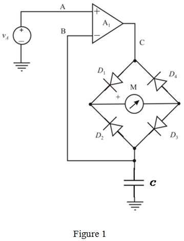
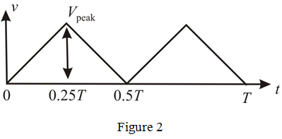

Step 1:
Refer to Figure 17.38 in the textbook for a precision rectifier circuit.
This circuit results a current, flow through the moving coil meter, M. Thus, the meter provides a reading that is proportional to the average of the absolute value of the input voltage,  .
.
The current through the meter as well as resistor is,
Replace the resistor,  in the circuit by a capacitor, .
in the circuit by a capacitor, .

Step 2:
The current passing through the capacitor is,
Consider that the input voltage,  for the equivalent performance is,
for the equivalent performance is,
The value of resistance,  is, .
is, .
Equate the current through the resistor and capacitor for equivalent performance.
The maximum values of sin and cos are 1. Therefore,
Therefore, the required value of capacitor,  is, .
is, .
Step 3:
Consider that the frequency,  is 120 Hz.
is 120 Hz.
The capacitor current in the circuit is,
Note that the capacitor current, at 60 Hz is, . Therefore,
Thus, the response of the circuit at 120 Hz is, .
Consider that the frequency,  is 180 Hz.
is 180 Hz.
The capacitor current in the circuit is,
Thus, the response of the circuit at 180 Hz is, .
Step 4:
For triangular wave input of 60 Hz frequency and the average meter current, of 1 mA, the output of the circuit for the triangular wave input is,

Step 5:
Consider the circuit with  .
.
The full wave rectifier average voltage is 1 V.
Therefore, the peak voltage is,

Consider the circuit with  .
.
The slope of the output wave is,
If the triangular wave passing through the capacitor, then the output of the capacitor gives symmetrical square wave.
Therefore, the peak current is,
Therefore, the average meter current, is, .